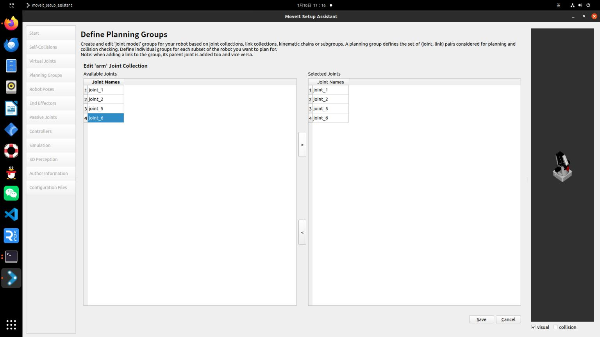

Moveit!生成相应配置文件
启动命令
rosrun moveit_setup_assistant moveit_setup_assistant.py
1.1 创建新的Moveit!配置文件,并加载URDF文件，点击load files
 1.2 自碰撞检测设置，按照默认值就ok。
什么是自碰撞检测配置? 机器人在规划运动轨迹的时候可能会出现自身结构相互碰撞的情况，所以需要设置自碰撞检测。
1.2 自碰撞检测设置，按照默认值就ok。
什么是自碰撞检测配置? 机器人在规划运动轨迹的时候可能会出现自身结构相互碰撞的情况，所以需要设置自碰撞检测。
 1.3 设置虚拟关节
什么是虚拟关节? 虚拟关节就是定义一个关节将机器人与世界链接起来，这里并没有进行设置
1.4 创建planning group: 这是使用Moveit!的一个核心步骤，需要设置机器人的各个部分的名称及其父级名称。
1.3 设置虚拟关节
什么是虚拟关节? 虚拟关节就是定义一个关节将机器人与世界链接起来，这里并没有进行设置
1.4 创建planning group: 这是使用Moveit!的一个核心步骤，需要设置机器人的各个部分的名称及其父级名称。
- 规划组名称:
arm - 运动学逆解工具:
- 初始选择:
KDL - 后改为:
IKFAST
- 初始选择:
- 运动规划参数:
- 可以按照默认值
- Kin. Search Resolution:
- 关节空间的采样密度
- Kin. Search Timeout:
- 求解时间
- Kin. Solver Attempts:
- 求解失败尝试次数
OMPL算法选择RRTConnect 算法，在论文中比较了三种算法，为RRT,RRT*,RRTConnect，可以自己查询资料了解三种算法的区别。

1.5 设置robot poses
这一步可以预先设置好一些机器人姿态，就像宏定义一样，方便后面调用。可以手动调节也可以输入数值来调节，调节的单位为弧度

1.6 配置末端执行器:
- 这里并没有进行设置。
1.7 设置被动关节:
- 这里也没有进行设置。
- 被动关节定义: 被动关节是无法主动运动的关节，也就是说，它依赖于其他部件的运动。设置为被动关节后，该关节不会参与运动规划。
1.8 设置作者等信息:
- 填写相关的作者、机构、联系方式等信息。
1.9 保存配置文件:
- 文件名设为
dobot_moveit_config。
- 文件名设为